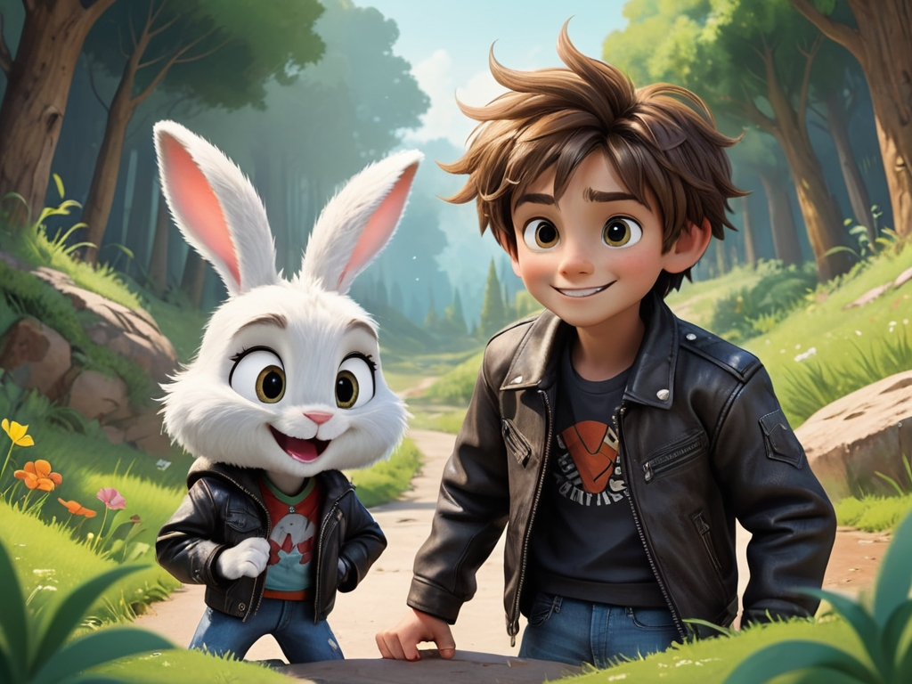
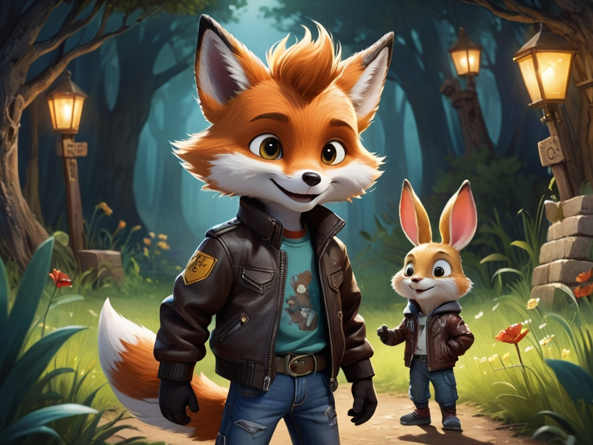
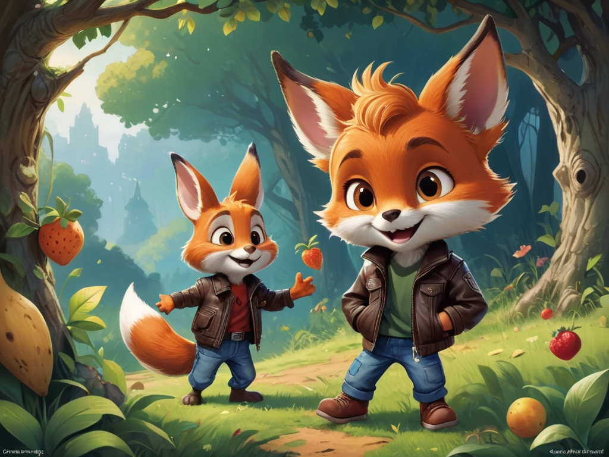
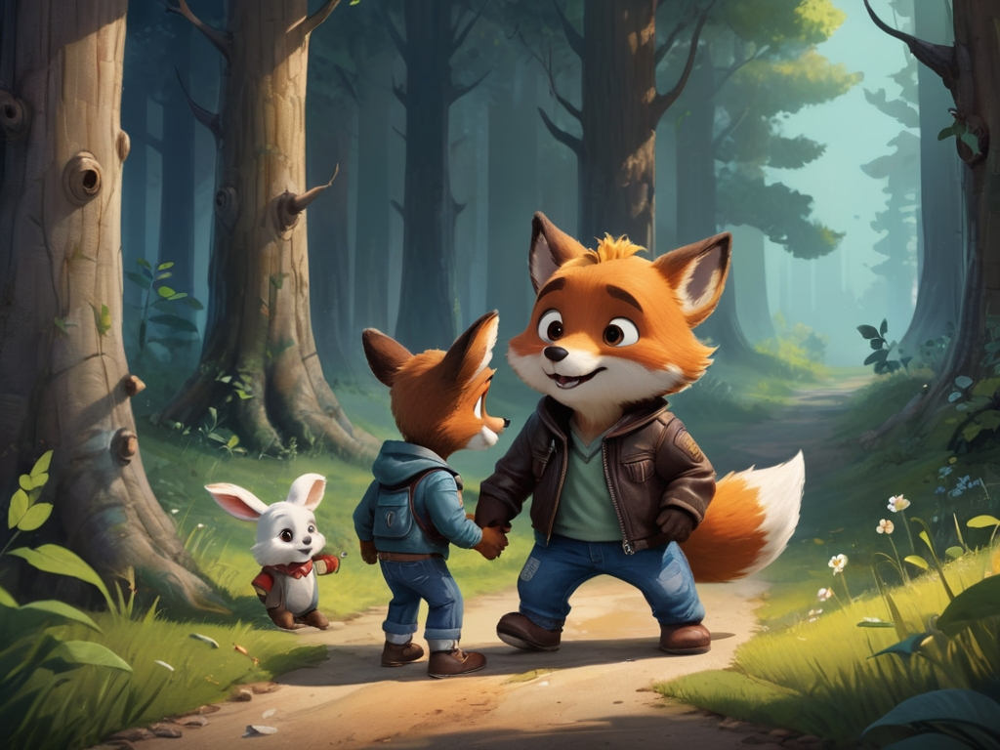
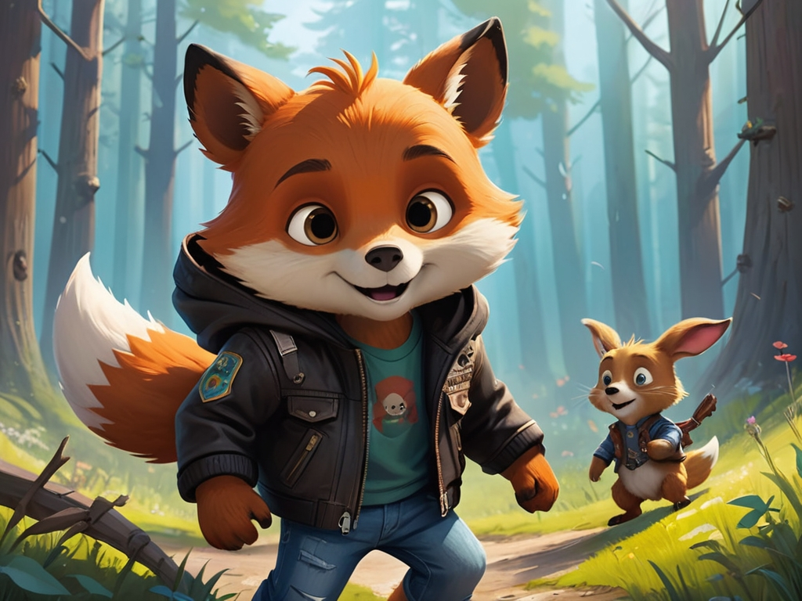
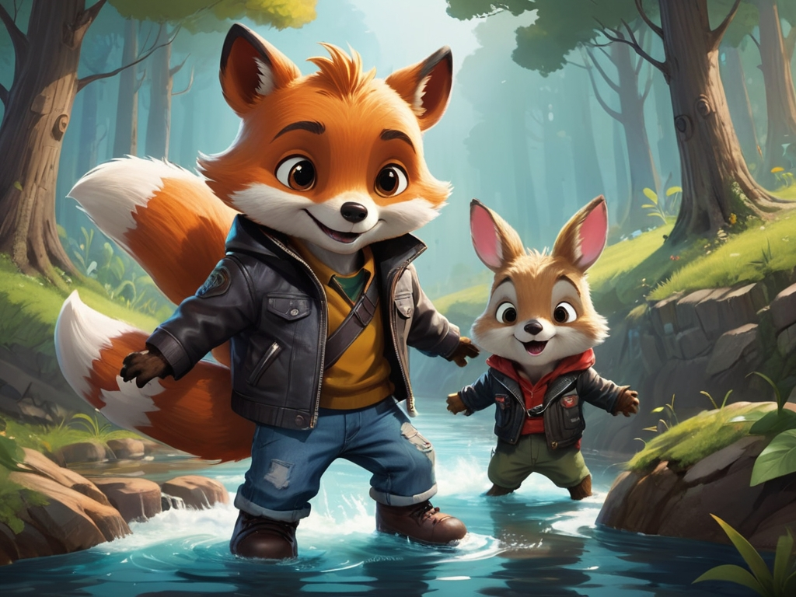
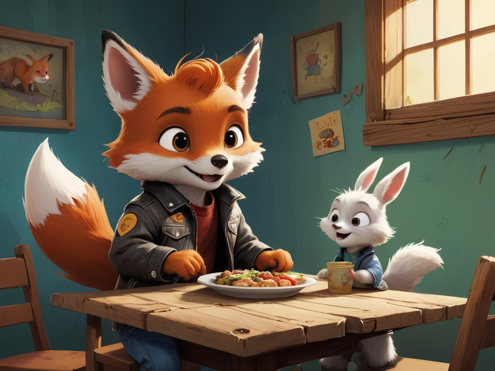
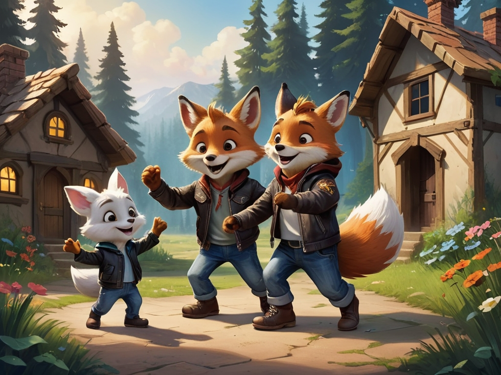
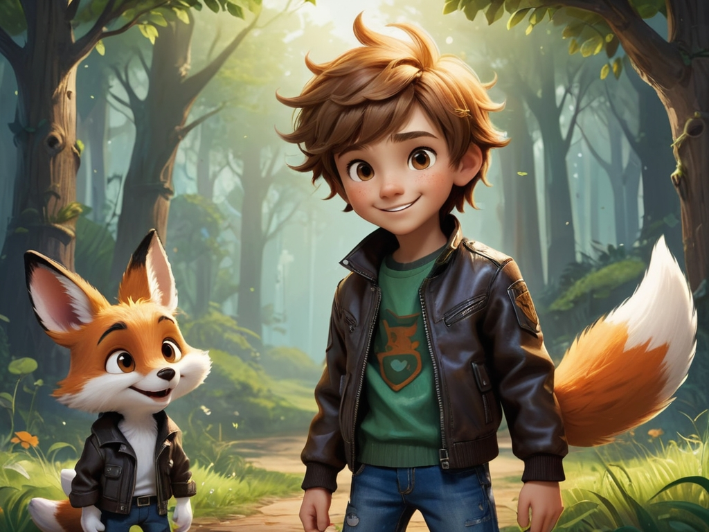
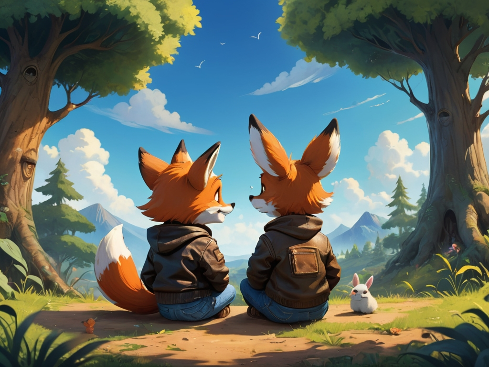

Scene 1: Meeting the Rabbit
Leo, a young fox full of adventure, meets a lost little rabbit who looks scared. He gently greets the rabbit and asks if it needs help.
Scene 2: Sharing Fruit
Leo shares fruit from his basket with the rabbit, who smiles and says, "Thank you, Leo!"
Scene 3: Meeting the Bear
They meet a little bear who is anxious and lost. Leo decides to help him find his way home.
Scene 4: Comforting the Bear
Leo and the rabbit comfort the bear and promise to help him together.
Scene 5: The Journey Begins
The friends pass through a big tree, cross a river, and keep looking for the bear's home.
Scene 6: A Thankful Family
They finally find the bear’s home. His parents thank Leo and the rabbit and invite them to dinner.
Scene 7: Celebration
After dinner, everyone celebrates by dancing and singing together outside the house.
Scene 8: The Realization
Leo realizes that helping others makes him even happier. He decides to keep spreading kindness.
Scene 9: Daily Kindness
From then on, Leo helps his friends every day with a big smile on his face.
Final Scene: A Better World
Leo sits under a tree looking at the sky, knowing that kindness and sharing can make the world better.
